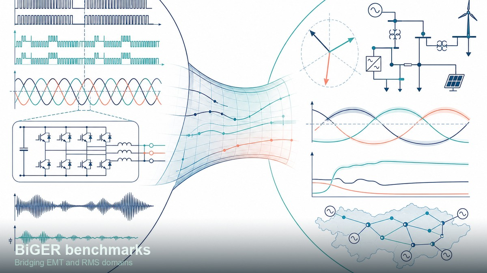
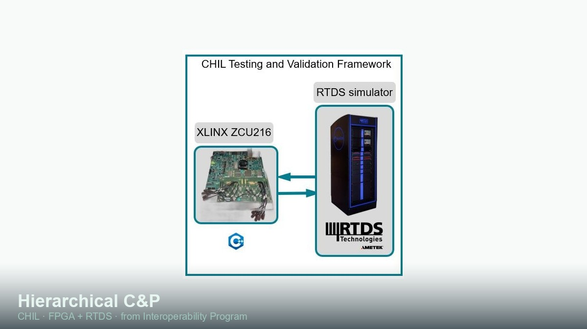
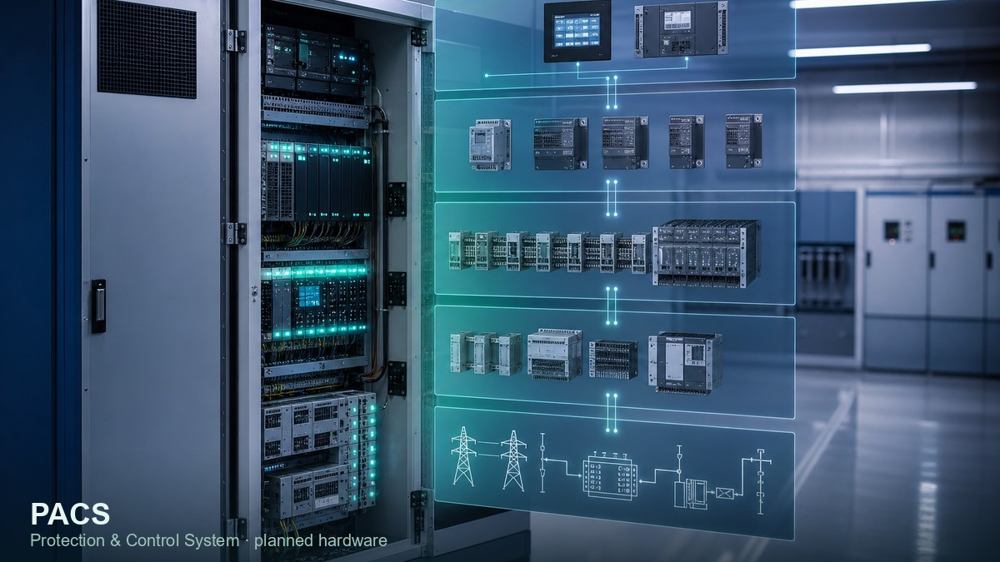
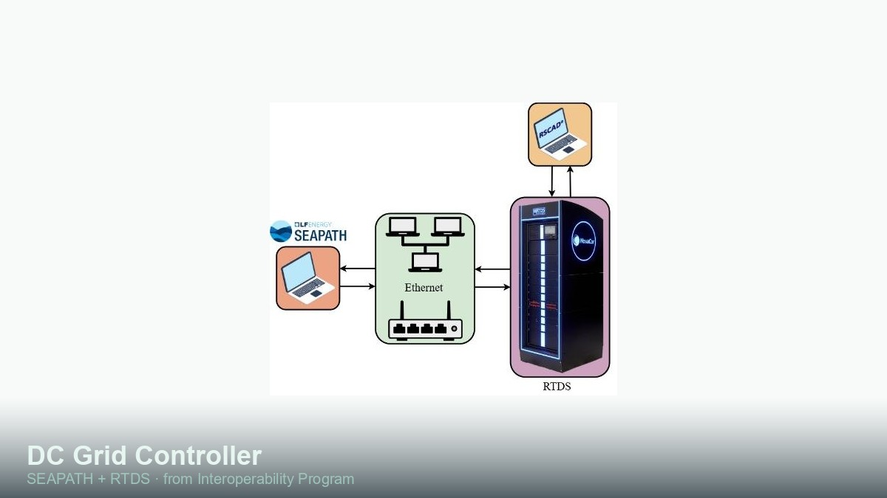

Organisation repositories: control-protection-grids-tudelft · CRESYM.
Software solutions

Harmony toolbox
C++ framework for dynamic-phasor time-domain simulation, AC/DC OPF and harmonic stability assessment of PE-penetrated AC/MTDC systems.…
TRL 3–4 →
ACDC-OpFlow
Unified cross-language AC/DC optimal power flow framework in C++, Julia, Python and MATLAB.…
TRL 4–5 →
DQsym
MATLAB/Simulink dynamic-phasor library for hybrid AC/DC systems with state-space and harmonic-aware simulation.…
TRL 4–5 →
HVDC RTDS models
Scripted North-Sea energy hub and HVDC grid models for RSCAD/RTDS (±525 kV / 2 GW class, CIGRE B4 / TenneT-aligned).…
One-of-a-kind library →
RTDS neural-network libraries
Real-time trainable neural-network models for advanced HVDC converter control on RTDS — advertised by RTDS Technologies worldwide.…
One-of-a-kind library →
SUNRISE MPC (RTDS)
Adaptive deadbeat MPC control models for HVDC converters, developed in the SUNRISE programme.…
Library →
BiGER benchmarks
Open use-cases and benchmarks bridging EMT and RMS for converter-driven stability studies.…
Benchmarks →
Hierarchical control & protection
Centralized/decentralized hierarchical C&P in C++/Julia for offline and real-time targets (FPGA, GTSOC 2.0, MCU), integrating AC/DC OPF and …
Research software →Training & courses
Hardware products

PACS
Protection and Control System — hierarchical C&P integrated on FPGA within PROSECCO.…
PROSECCO demonstrator →
DC Grid Controller (DCGC)
Modular digital-substation concept for interoperable DC grid control (SCADA/EMS/LFC/scheduling functions).…
Concept →
DC Switching Station (DCSS)
Switchyard controller for IED communication and modular HVDC grid expansion points.…
Concept →